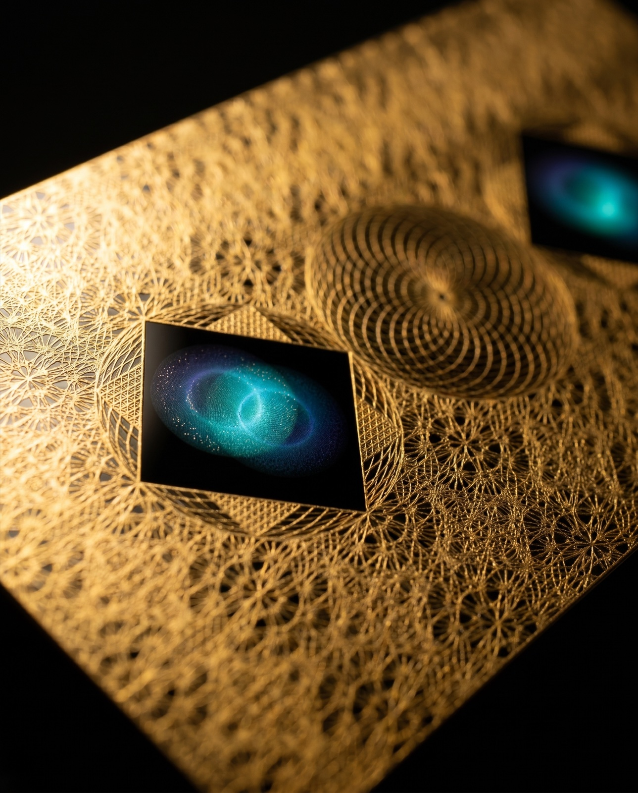
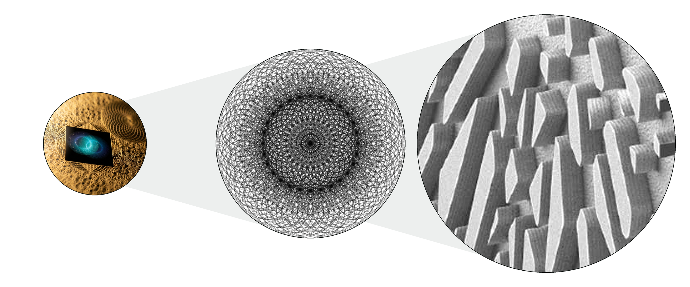
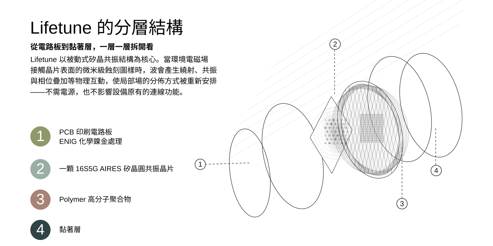

TECHNOLOGY · 運作原理
雜亂的電磁波，
如何被調和成有序？
答案藏在幾何裡——一枚蝕刻了 4,084,101 個圓形共振器的矽晶片，以四種同時運作的物理交互作用，重新安排場的結構。這一頁把過程拆開給你看。
Geometry-determined physics

答案藏在幾何裡——一枚蝕刻了 4,084,101 個圓形共振器的矽晶片，以四種同時運作的物理交互作用，重新安排場的結構。這一頁把過程拆開給你看。

畫面中金色環形圖樣即為共振天線，以金浸製程鍍成。選用黃金是純工程考量：導電性佳、電阻低，振動損耗少、效率高；且不易氧化、耐久，能長時間維持穩定。當電磁波遇上金屬導線會產生感應電流，電流再輻射出新的波，與原波干涉後使中央晶片附近的場增強——但總能量不變，這也是它不影響訊號的原因之一。
中央深色方塊即為矽晶片——畫面右上另可見第二枚。不同產品搭載不同數量的共振晶片：ONE、GO 各一片，FLEX、ZONE 各兩片，ZONE MAX 四片。晶片數量是各款涵蓋直徑不同的來源之一。
Lifetune 的晶片與一般微處理器使用同等級的光刻設備製造，但目的完全不同：一般晶片用電路運算資訊；它以純幾何結構與環境電磁場交互作用。晶圓表面以自相似環形晶格圖樣蝕刻出環形溝槽——這個圖樣本身，就是全部的機制。
0.2 微米的蝕刻精度，對應的是半導體業自 1990 年代後期就成熟量產的製程節點（DUV 深紫外光刻）。換句話說，這不是實驗性工藝，而是經過數十年驗證、業界標準的製造技術。

把鏡頭拉遠——這枚晶片，是這樣被包進整個裝置的：

晶片表面刻著微米級的幾何迷宮。環境裡的電磁波——不管是 5G、Wi-Fi 還是藍牙——一碰到這個結構，就像水流遇到岩石，自然彎折、擴散開來（這就是繞射）。原本集中在某個方向的場，被這道幾何攤開成更寬、更有秩序的分佈。而且圖樣在大大小小的尺度上重複，所以單單一枚晶片，就能同時對整個無線頻段作用。
傳統天線很大，而且一支通常只對一種頻率有反應。這枚晶片把大大小小的碎形圖案，像俄羅斯娃娃一樣層層嵌套、微縮在表面——小圖案對應高頻、大圖案對應低頻。所以它不需要電力、也不需要切換，就能同時對生活裡各種頻率的電磁波產生共振、自動對上頻率。這也是為什麼碎形天線早就取代了伸縮天線，進到全球數十億支手機裡。
你可能聽過主動降噪耳機：偵測到噪音，就發出一道反向聲波去中和它——這是為什麼可以降噪的原理。這枚晶片的結果類似：把雜亂的場梳理得更規律，但做法略有不同。它不插電、不偵測、也不發射任何反向訊號。它只用晶片上的幾何軌道，讓進來的波彼此疊加、重新排列成更有秩序的場型。降噪耳機靠「主動抵消」，它靠「被動的幾何」。
最後一步發生在矽晶片本身。矽是半導體，對電場特別敏感。當環境的電磁場作用在晶片上，裡面的電荷會像聽到指揮一樣，在微米級的溝槽裡重新排列、形成電位差；累積到一定程度，電流就沿最短路徑流動，再感應出一道向外傳播的場。關鍵是：這道輸出場的形狀，完全由溝槽的幾何決定，跟原本那些雜亂電磁波長什麼樣子無關——所以不管環境多亂，輸出永遠是同一種規律結構。
前面四種交互作用不是各自獨立的步驟，而是一條鏈——同時運行於同一枚被動元件：
碎形幾何跨全頻段與環境電磁場耦合，驅動矽晶圓內的電荷生成結構化輸出場，再經繞射與相位干涉重塑局部場型。淨結果：裝置周圍的局部電磁環境比原本更相干、更有組織——「有組織」不是修辭，指的是輸出場呈規律交替的極大與極小分佈，形狀由晶片幾何決定。
那對你的手機呢？環境場的分佈改變後，接收器解碼所需的條件，沒有一項被破壞：
繞射與干涉都是線性過程，不改變載波頻率——接收端仍鎖定在同一頻道。
干涉改變的是能量在空間中的分佈，總量不被吸收消耗——這正是它與「屏蔽／吸收」的根本差異，也是頻譜實測「場強空間重分佈」的物理含義。
一面牆、一隻手造成的多路徑相移，都遠大於一枚被動晶片；而現代接收器本來就靠導頻即時等化這類擾動——這是通訊系統的日常，不是例外。
頻率沒變、能量沒被吸收、擾動又在接收器天生的處理範圍內——所以裝置照常連線運作。「屏蔽」與「吸收」靠削弱訊號達到效果；這項技術改變的是場的結構，不是訊號的強度。
「無論邊界條件如何改變，穩態解都保持穩定、呈孤子態——輸出場的形狀，不取決於入射輻射的特性。」
二維與三維非穩態數學模型 · 6 mm 晶圓 · 2.4 GHz 入射條件
白話說：不管環境場多混亂，這枚晶片輸出的場永遠長一個樣子——由它自己的幾何決定。這和石英振盪器是同一族原理：石英晶體以切割幾何決定輸出頻率，全世界每支手機、每台電腦裡都有一顆。相關建模與實驗發表於 2006–2022 年間的多篇論文，包括 Springer 出版的同行評審研究。
每款 Lifetune 的涵蓋直徑不是行銷數字，而是依物理變數計算的量值：
晶片越大、數量越多，輸出場延伸的範圍越廣——這就是系列間涵蓋直徑差異的全部原因。形態不同、情境不同，沒有等級之分。
| 系列 | 涵蓋直徑 | 共振晶片 |
|---|---|---|
| ONE | 5.6 m | 1 片 |
| GO | 9.8 m | 1 片 |
| FLEX | 12.8 m | 2 片 |
| ZONE | 28 m | 2 片 |
| ZONE MAX | 41.8 m | 4 片 |
數值為開放空間涵蓋直徑 · 不分等級